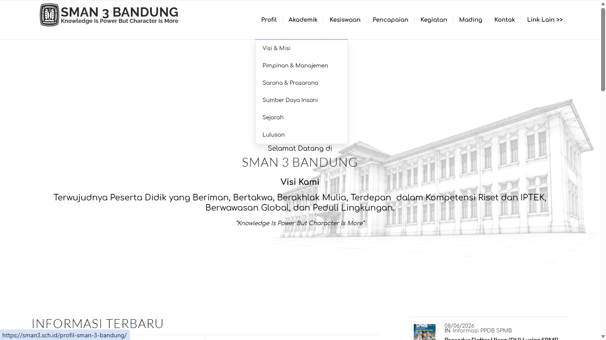
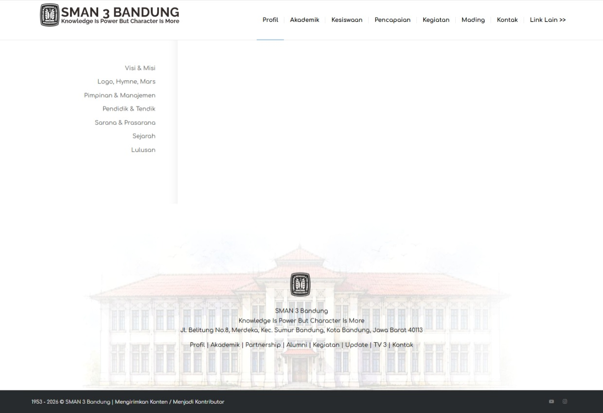
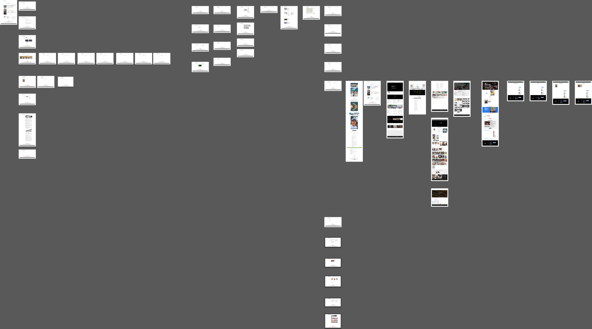

Kejelasan navigasi
Pengguna masih membutuhkan petunjuk yang lebih jelas untuk menemukan beberapa kategori informasi.
STUDI KASUS UI/UX · DESAIN ULANG WEBSITE
Desain ulang pengalaman pengguna website SMAN 3 Bandung dengan fokus pada struktur informasi, navigasi, dan akses menuju konten penting.
Lihat Prototipe ↗01 — TANTANGAN
Website sekolah memuat banyak informasi yang dibutuhkan siswa, orang tua, alumni, dan calon peserta didik. Namun, keberadaan informasi saja belum cukup apabila pengguna kesulitan menemukan lokasi menu yang tepat.
Evaluasi dilakukan untuk mengetahui kemudahan pengguna dalam menemukan informasi pada website.
02 — RISET
Pengujian dilakukan untuk melihat seberapa mudah responden menyelesaikan tugas pencarian informasi.
skenario tugas dan Pertanyaan Kemudahan Tunggal (Single Ease Question/SEQ), dilaksanakan pada 30 September 2026. Responden memberikan penilaian setelah menyelesaikan setiap tugas.
03 — TEMUAN UTAMA
Rata-rata skor keseluruhan mencapai 5.8 dari 7. Seluruh sepuluh tugas memenuhi benchmark 5.5.
Seluruh tugas memperoleh skor di atas tolok ukur minimum 5,5.
Pengguna masih membutuhkan petunjuk yang lebih jelas untuk menemukan beberapa kategori informasi.
Informasi penting seperti prestasi dan kontak dapat dibuat lebih menonjol.
Jalur menuju informasi penting perlu dibuat lebih ringkas dan mudah dikenali.
04 — ARAH DESAIN
Rekomendasi berikut diterjemahkan menjadi arah perancangan ulang berdasarkan temuan evaluasi.
Mengelompokkan sejarah, visi-misi, tujuan, dan informasi dasar sekolah dalam struktur konsisten.
Menonjolkan tautan menuju prestasi, SPMB, kegiatan, dan kontak sekolah.
Menyediakan akses cepat ke informasi yang sering dicari pengguna.
05 — SEBELUM & SESUDAH
Perbandingan tampilan website SMAN 3 Bandung sebelum dan sesudah proses desain ulang.

Pada tampilan sebelumnya, pengguna perlu mencari informasi melalui navigasi navbar dan membuka menu terlebih dahulu untuk menemukan halaman yang dibutuhkan.

Setelah redesign, navigasi sidebar ditempatkan di sebelah kiri agar kategori informasi lebih mudah terlihat dan diakses. Tampilan juga dirancang dengan pengelompokan informasi yang lebih terstruktur.
06 — PROTOTIPE
Prototipe Figma memperlihatkan rancangan navigasi dan pengelompokan konten website SMAN 3 Bandung.
Jelajahi alur halaman dan interaksi pada prototipe.
Buka Prototipe Figma ↗Membentuk generasi unggul, berkarakter, dan peduli lingkungan.
07 — MOCKUP
Visual desain ulang website SMAN 3 Bandung yang menyajikan informasi sekolah dengan navigasi dan struktur yang lebih jelas.

08 — KESIMPULAN
Pengujian kemudahan penggunaan menghasilkan skor rata-rata SEQ 5,8 dari 7 pada sepuluh tugas yang diuji. Seluruh sepuluh tugas mencapai tolok ukur 5,5. Temuan ini menjadi dasar untuk memprioritaskan perbaikan navigasi, hierarki informasi, dan akses cepat menuju konten penting.
Langkah berikutnya adalah melakukan pengujian lanjutan terhadap prototipe untuk mengetahui apakah perubahan desain benar-benar meningkatkan kemudahan penggunaan.
← Kembali ke portofolio